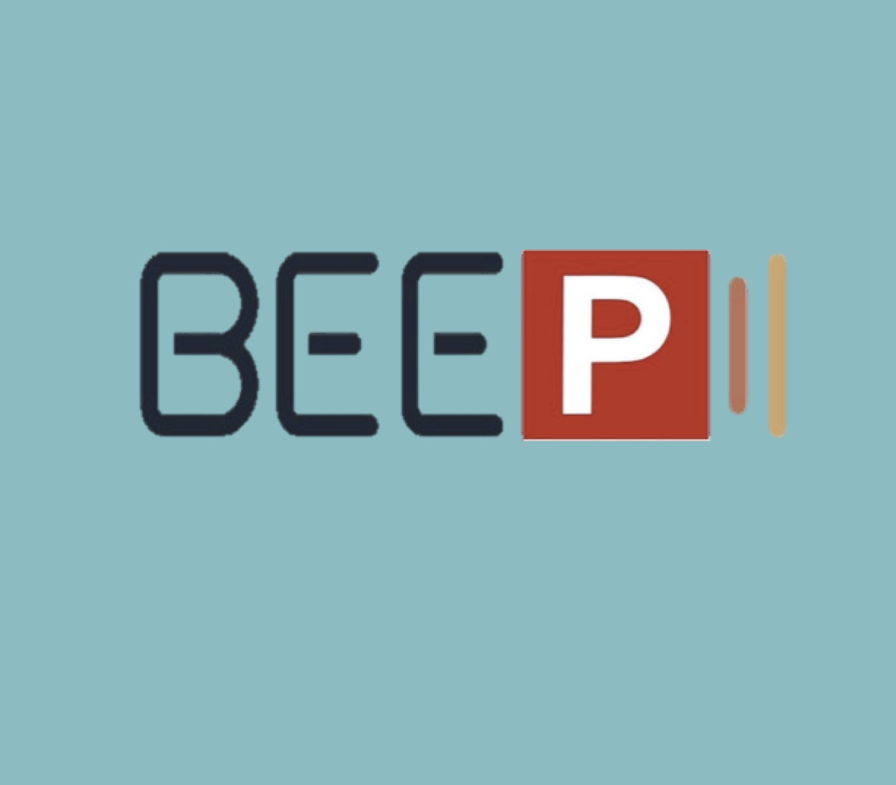

Who am I?
I am a Cognitive Scientist. In the past I've partaken in research investigating epigenetic markers and drug-development for Alzheimer's and Parkinson's diseases, and glycoprotein fucosylation for Cancer cell-therapy.
In my spare time I am learning to be a writer and infographics designer. I enjoy learning new languages, traveling, & exploring nutritious cuisine with friends.

Curcumine for Memory
Curcumine is an ancient Indian spice, identified to boost attention span and memory. Its benefits are extracted from its natural antioxidant, anti-inflammatory, and anti-cancer properties. In the past I've partaken in research discerning curcumin derivetaives with highest potency, ability to cross the blood-brain barrier, and those with neuroprotective and neurogenic properties.

NeuWrite San Diego
NeuWrite San Diego is a collaborative group of scientists from the UCSD Neurosciences, Psychology, and Cognitive Science departments.
There are multiple NeuWrite groups nationwide, and although each group has a different focus, collecively our goal is to raise the bar of science communication by collaborating with local and national sceintific communities.

BEEP Parking App
BEEP is a Mobile app designed by six UCSD students, to allow UCSD community to track open parking spots throughout campuses. Technologies: HTML, CSS, JavaScript, github.io

Memory Stored on DNA
I created an interactive report on the topic "Benefits of Social Norms Implementation in a Dialog". Inspired by the Colbert Show guest speaker George Church, who managed to store 70 billion book copies, totaling 44 petabytes of data, on DNA. “There is no other polymer that would be a priori cheaper to manufacture or easier to program than DNA,” said Church.

SFN 2015
I was honored to attend the SFN 2015 and present my poster "Investigation of the therapeutic effects of J-147 in two animal models of Parkinson's disease". The Society for Neuroscience is the world's largest organization of scientists and physicians devoted to understanding the brain and nervous system.